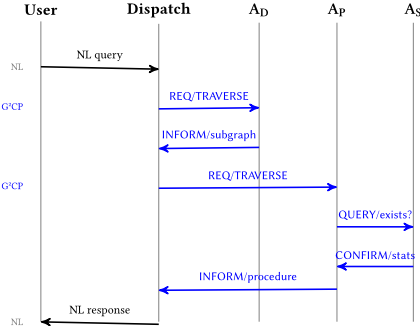
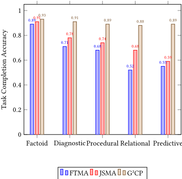
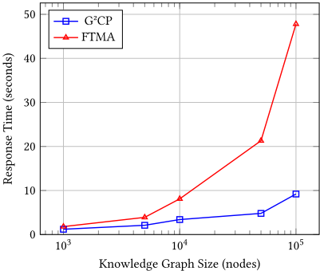

G2CP：一种以图为基座的通信协议，实现可验证且高效的多智能体推理
LLM 多智能体系统普遍以自然语言作为 Agent 间通信媒介，导致语义漂移、幻觉传播与 token 浪费，论文引用的研究指出 43% 的多智能体失败源于 Agent 间误沟通而非单个 Agent 能力不足。G2CP 提出用共享知识图谱上的结构化图操作（TRAVERSE/UPDATE）替代自由文本消息：消息由继承自 FIPA-ACL 的 performative（REQUEST、INFORM 等）加可执行图操作构成，LLM 仅在用户边界负责实体抽取、意图分类与遍历深度估计，Agent 间通信完全确定性且可通过重放审计。在 500 个合成工业场景与 21 个真实维护案例中，相比自由文本基线，任务完成准确率相对提升 34%（90% vs 67%），Agent 间通信 token 减少 73%，幻觉率从 23% 降至 2%，级联错误被完全消除，10 万节点规模下比基线快 5.2 倍。对团队而言，这是多智能体协作与 Agent 通信协议方向的直接参考，尤其适合需要可审计、低幻觉、低通信成本的内部多 Agent 流水线。
LLM-based 多智能体系统以自然语言作为默认通信介质，带来三个根因问题：semantic drift（语义在 Agent 间多跳传递中退化）、hallucination propagation（一个 Agent 的虚构内容污染下游推理）、computational waste（冗长自然语言交换消耗远超信息含量的 token）。经典案例：Agent A 说的 bearing failure 被 Agent B 泛化理解为不同轴承型号，导致 Agent C 基于错误零件清单估算成本。
G2CP 将 Agent 间消息定义为四元组（sender、receiver、performative、图操作、上下文），内容语言不是谓词逻辑或自由文本，而是共享异构知识图谱上的显式操作：TRAVERSE（按边类型过滤的多跳遍历，返回 SUBGRAPH/LEAVES/PATHS）与 UPDATE（图变更）。保留 FIPA-ACL 式 performative 与社会承诺语义，但图操作无需定理证明器即可直接执行，且通过节点 embedding 与神经检索管线兼容。四个专职 Agent（Diagnostic、Procedural、Synthesis、Ingestion）各自 specialize 于不同边类型集合；LLM 仅用于解析用户查询（实体抽取、意图分类、边类型选择、深度估计，论文给出完整 prompt）与生成最终回复，Agent 间消息为确定性图操作。实现基于 Neo4j（Cypher 遍历执行器）+ Apache Kafka 消息传递，含三阶段消息解析管线、Ed25519 消息签名、RBAC 访问控制、信任分数传播、图版本回滚与审计日志。
500 个合成工业场景：G2CP 任务完成准确率 90%，相对 FTMA 自由文本基线（67%）提升 34%（p<0.001，配对 t 检验）；关系类查询相对提升 69%，预测类查询提升 62%
Agent 间通信 token：平均每查询 768 tokens，较 FTMA（2,847）减少 73%；简单查询约 3 倍缩减，复杂多跳查询约 6 倍缩减
幻觉率从 FTMA 的 23% 降至 2%；级联错误率从 FTMA 的 31% 降至完全消除
消融实验：移除 hop depth 规格导致最大退化，准确率下降 18%
可扩展性：G2CP 响应时间随图规模亚线性增长 O(n^0.7)，FTMA 为超线性 O(n^1.3)；在 100,000 节点时 G2CP 快 5.2 倍
真实工业验证（21 个可评估案例）：诊断准确率 86%（合成数据上为 90%）；平均诊断时间从人工 47 分钟降至 12 分钟；发现 4 个技术人员未知的历史故障模式
理论保证：遍历复杂度 O(|V_s|·d^h·|Ψ_f|)；通信复杂度 O(k·log|V|) tokens 对比自由文本 O(k·L)；并给出确定性、可审计性、完备性、非幻觉四个定理及附录证明
区别于 AutoGen、LangGraph、CrewAI、MetaGPT 等以自然语言或文档协调的 LLM 多智能体框架，G2CP 让 Agent 间消息成为可执行、确定性的图操作，从语言通信转向结构通信；区别于经典 ACL（KQML、FIPA-ACL）依赖共享逻辑本体与定理证明器，G2CP 以图操作为内容语言，原生兼容 LLM 与神经检索；区别于把知识图谱当作被动数据结构的 graph-RAG 系统，G2CP 让共享图同时充当信息库与通信介质（对 blackboard 架构与 Contract Net Protocol 的形式化），并通过实体解析在图构建期一次性消解语义异构，免去运行时本体对齐。
相关度级别：high
命中能力域：3.4 多智能体协作 | 3.3 Agent 架构与工具使用 | 3.5 评测与可靠使用 | 3.1 上下文工程与记忆
理由：直接命中 3.4：Agent 通信协议正是该能力域的明确条目，G2CP 是一个完整的协议设计（performative 语义、消息语法、承诺语义、安全模型）。同时命中 3.3：LLM-based operation selection（Algorithm 2）、三阶段消息解析执行引擎、错误处理与审计日志属于典型的 Agent harness 设计，Agent 通过 LLM 动态选择图操作等价于一种结构化工具调用。命中 3.5：论文提供 500+21 案例的评测方法学（token 计数口径、幻觉率、级联错误率、可审计性评分）、消融实验、人因评估，以及可靠性保证（可重放审计、非幻觉定理）与 token 成本优化。与 3.1 相关：共享知识图谱作为结构化上下文组织与图检索基底，节点 embedding 支持语义相似检索。全部改进发生在通信格式、提示设计与系统编排层，不涉及模型训练，与团队'把模型用好'的定位完全一致。
建议动作：深入精读并做内部分享
arXiv:2602.13370v1 [cs.MA] 13 Feb 2026
Karim Ben Khaled 洛林大学（University of Lorraine），LORIA，法国南锡 karim.ben-khaled@univ-lorraine.fr Davy Monticolo 洛林大学（University of Lorraine），LORIA，法国南锡 davy.monticolo@univ-lorraine.fr
由大语言模型（Large Language Models）驱动的多智能体系统面临一个关键挑战：智能体通过自然语言进行通信，导致语义漂移、幻觉传播以及低效的 token 消耗。我们提出 G2CP（Graph-Grounded Communication Protocol，图锚定通信协议），一种结构化的智能体通信语言，其中消息是图操作而非自由文本。智能体在共享知识图谱上交换显式的遍历命令、子图片段和更新操作，从而实现可验证的推理轨迹并消除歧义。我们在一个工业知识管理系统中对 G2CP 进行了验证，其中专用智能体（Diagnostic、Procedural、Synthesis 和 Ingestion）协同工作以回答复杂查询。在 500 个工业场景和 21 个真实维护案例上的实验结果表明，G2CP 将智能体间通信 token 减少了 73%，相较于自由文本基线将任务完成准确率提升了 34%，消除了级联幻觉，并生成完全可审计的推理链。G2CP 代表了多智能体系统中从语言式通信向结构式通信的根本转变，对任何需要精确智能体协作的领域都具有重要意义。代码、数据和评估脚本已公开可用。1
Karim Ben Khaled 和 Davy Monticolo。2026。G2CP：一种用于可验证且高效多智能体推理的基于图的通信协议。载于《第25届自主智能体与多智能体系统国际会议论文集》（AAMAS 2026），塞浦路斯帕福斯，2026年5月25日至29日，IFAAMAS，13页。
基于大语言模型（LLM）的多智能体系统已将自然语言作为其默认的通信媒介 [19]。AutoGen [22]、LangGraph [11] 和 CrewAI [1] 等框架使开发者能够将复杂任务分解给多个专业化智能体，这些智能体通过对话进行协作。尽管这种语言上的灵活性降低了多智能体设计的门槛，但它也引入了关键的脆弱性：语义漂移（semantic drift），即含义在各智能体相继重新解释的过程中逐渐退化；幻觉传播（hallucination propagation），即某个智能体输出中的虚假断言会污染下游推理；以及计算浪费（computational waste），即冗长的自然语言交换所消耗的 token 远超其信息内容。
1 https://github.com/karim0bkh/G2CP_AAMAS
《第25届自主智能体与多智能体系统国际会议论文集》（Proc. of the 25th International Conference on Autonomous Agents and Multiagent Systems, AAMAS 2026），C. Amato、L. Dennis、V. Mascardi、J. Thangarajah（编），2026年5月25日至29日，塞浦路斯帕福斯。© 2026 国际自主智能体与多智能体系统基金会（www.ifaamas.org）。本作品依据知识共享署名4.0国际许可协议（CC-BY 4.0）授权使用。
考虑一个工业维护中的诊断场景：Agent A 识别出"轴承故障"，并要求 Agent B"查找维修流程"。Agent B 将"轴承故障"理解为一般性的轴承问题，检索到针对另一种轴承型号的流程，而 Agent C 则基于错误的零件清单估算成本。这种级联错误的产生，是因为自然语言缺乏智能体间可靠通信所需的精确性。其根本原因在于：
我们提出一种彻底的替代方案：智能体应当通过结构化的图操作而非自然语言进行通信。我们的贡献——基于图的通信协议（Graph-Grounded Communication Protocol, G2CP）——用共享知识图谱上的显式命令取代文本消息。Agent A 不再说"查找轴承 B-4521 的维修流程"，而是发送：
TRAVERSE FROM {Part:B-4521} VIA {addressed_by} FOR 1 RETURN SUBGRAPH
这条消息是无歧义的、可执行的、可验证的。Agent B 执行确切的图操作，返回一个子图片段，整个推理链因此变得可审计。
直觉。核心思想很简单：如果两个智能体共享一个知识图谱，它们就可以精确地指向自己所指的节点和边，而无需用文字加以描述。一条 G2CP 消息就像递给同事一个数据库查询，而不是一封电子邮件——没有产生误解的空间。该协议将这些查询包装在经典的施为语（performative，如 REQUEST、INFORM 等）中，使智能体得以保留由 FIPA-ACL [5] 开创的社会协调机制，但将每个内容表达式锚定在图上，而非谓词逻辑或自由文本之中。
本文做出了四项主要贡献：
| Feature | KQML | FIPA | Commit. | G2CP |
|---|---|---|---|---|
| Content lang. Semantics | KIF | SL/KIF BDI | Logic Social | GraphOp Graph |
| Mentalistic | ||||
| Neural compat. | × | × | × | ✓ |
| Embeddings | × | × | × | ✓ |
| Verifiable | Partial | Partial | ✓ | ✓ |
| Deterministic | × | × | Partial | ✓ |
| Token-efficient | N/A | N/A | N/A | ✓ |
| Feature | KQML | FIPA | Commit. | G2CP |
我们的工作将源自经典人工智能 [4-6, 17] 的 Agent 通信语言与现代图增强的大语言模型（LLM）系统相衔接，为可靠的多智能体推理奠定了基础。
Agent 通信拥有早于 LLM 的悠久历史。KQML [4] 为 Agent 间消息传递建立了知识层级的施为语（performatives）。FIPA-ACL [5] 将其完善为一个标准，其形式化语义建立在心智态度（信念、愿望、意图）之上。两者都假设 Agent 是符号化的且共享本体，并使用 SL 和 KIF 等内容语言。
一条重要的研究路线超越了心智主义语义，转向基于承诺的方法。Singh [17] 提出以社会承诺作为 Agent 通信的基础，主张语义应建立在公开可观察的社会事实而非私有心智状态之上。Yolum 和 Singh [23] 开发了承诺协议，支持灵活且能处理异常的 Agent 交互。Fornara 和 Colombetti [6] 以承诺及其生命周期为框架对通信行为进行了形式化。Winikoff 等人 [20] 引入了 Agent 通信的声明式方法，进一步将协议规范与实现解耦。
基于 LLM 的现代 Agent 通常放弃结构化协议，转而采用自然语言 [19]。虽然这带来了灵活性，却牺牲了精确性与可验证性。我们的工作重新启用结构化通信，但将其建立在图操作而非谓词逻辑之上，使其与神经检索系统兼容，同时保留经典 Agent 通信语言（ACL）的社会承诺保证。
表 1 围绕内容语言、语义基础、神经兼容性与可验证性提供了系统性比较。
2.1.1 语义异构性：FIPA 本体与 G2CP 的对比。经典 ACL 面临的一个核心挑战是语义异构性（semantic heterogeneity）：当多个 Agent 维护不同的本体时，在运行时对齐符号化定义需要进行本体匹配 [3]。FIPA 通过本体服务和内容语言协商来应对这一问题，但实际部署常常在互操作性上遇到困难。
G2CP 从设计上规避了这一问题。所有 Agent 都运行在同一个共享图实例上，其中实体在图构建阶段通过实体解析流水线（字符串规范化、基于嵌入的模糊匹配、领域专家验证）一次性完成解析。Agent 的特化表示的是同一图的不同视图——即为遍历选择不同的边类型——而非不同的本体。这意味着 Agent 间消息引用完全相同的节点标识符，从而无需进行运行时对齐。
近期的框架通过自然语言协调展现出了令人瞩目的能力。AutoGen [22] 支持在特化 Agent 之间构建对话式工作流。LangGraph [11] 将 Agent 交互结构化为带有自然语言转移的状态机。CrewAI [1] 为通过对话进行协作的 Agent 分配角色和目标。MetaGPT [10] 使用文档和图表等结构化输出进行协调，而 ChatDev [16] 则用角色特化的 Agent 模拟了一家软件公司。
然而，这些系统存在语义漂移问题。Liang 等人 [12] 发现，幻觉率会在 Agent 链上复合累积，一个 Agent 输出中的错误会破坏下游推理。Guo 等人 [8] 的研究表明，43% 的多智能体失败源于沟通失误，而非单个 Agent 自身的错误。
G2CP 通过彻底消除 Agent 之间的语言解释来解决这一问题。Agent 仍然使用大语言模型（LLM）来理解用户查询并生成最终响应，但 Agent 间的消息是确定性的图操作。
知识图谱提供了结构化的知识表示 [9]。近期工作将图与 LLM 相结合以实现检索增强生成（RAG）[2, 13, 15]。然而，这些系统将图视为被动的数据结构，而非通信媒介。
我们的工作在概念上与黑板架构（blackboard architecture）[14] 最为接近，其中 Agent 通过共享数据结构进行协调；同时也与合同网协议（Contract Net Protocol）[18] 相近，后者以结构化的任务公告取代自由形式的协商。G2CP 对此进行了形式化：知识图谱既充当信息库，又充当通信基底。Agent 发布的是图操作而非符号化断言，从而通过统一机制同时实现协调与知识检索。
设 𝐺 = ( 𝑉, 𝐸, Λ , Ψ ) 为一个异构有向知识图谱，其中 𝑉 = { 𝑣 1 , . . . , 𝑣 𝑛 } 是顶点（实体）集合，𝐸 ⊆ 𝑉 × 𝑉 是有向边（关系）集合，Λ = { 𝜆 1 , . . . , 𝜆 𝑘 } 是节点类型集合，Ψ = { 𝜓 1 , . . . , 𝜓 𝑚 } 是边类型集合。
每个节点 𝑣 𝑖 具有类型 𝜆 ( 𝑣 𝑖 ) ∈ Λ、稠密向量嵌入 x 𝑖 ∈ R 𝑑（由句子编码器基于节点的文本描述计算得到，从而支持语义相似度搜索），以及属性 𝐴 𝑖（一个键值字典，用于存储结构化属性，例如 {name: "Bearing B-4521", serial: "SN-9042", install_date: "2021-03-15"}）。
| Performative | Semantic Commitment |
|---|---|
| REQUEST INFORM QUERY PROPOSE CONFIRM REJECT UPDATE | Sender asks receiver to execute 𝑜𝑝 and return results Sender asserts that 𝑜𝑝 has been executed with specified results Sender asks whether 𝑜𝑝 would return non-empty results Sender suggests 𝑜𝑝 as a candidate operation for consideration Sender validates receiver's previous operation result Sender indicates receiver's operation violated constraints Sender commands modification to 𝐺 via 𝑜𝑝 |
| Performative | Semantic Commitment |
每条边 𝑒 𝑖 𝑗 = ( 𝑣 𝑖 , 𝑣 𝑗 ) 具有类型 𝜓 ( 𝑒 𝑖 𝑗 ) ∈ Ψ、权重 𝑤 𝑖 𝑗 ∈ [ 0 , 1 ] 以及时间戳 𝑡 𝑖 𝑗。
一条 G2CP 消息是一个元组：
其中 sender、receiver ∈ A（Agent 标识符），perf ∈ P（来自表 2 的施为动词 performative），op 是一个图操作（定义 3.1），ctx = ( conv _ id , 𝐺 focus )，其中 𝐺 focus ⊆ 𝐺 是当前会话子图。
直观理解。一条 G2CP 消息就像共享同一数据库的两位同事之间传递的一张指令单。施为动词表明正在执行的是哪一种言语行为（询问、告知、提议），而操作则确切指明涉及哪些数据。由于两个 Agent 看到的是同一张图，对内容的误解空间为零。
定义 3.1（图操作）。图操作 𝑜𝑝 取以下两种形式之一：
直观理解。一次遍历从一组源节点出发，沿指定类型的边向外“行走”，收集在给定跳数内可达的所有内容。返回格式控制 Agent 拿回的是探索到的完整子图、仅端点，还是所走的具体路径。
形式化地，遍历操作的语义为：
并以递归方式计算为：
其中 𝑁 ( 𝑉 𝑠 , Ψ 𝑓 ) = { 𝑣 𝑗 | ∃ 𝑣 𝑖 ∈ 𝑉 𝑠 , ( 𝑣 𝑖 , 𝑣 𝑗 ) ∈ 𝐸,𝜓 ( 𝑣 𝑖 , 𝑣 𝑗 ) ∈ Ψ 𝑓 } 计算过滤后的邻域，extract 根据 ret 对结果进行格式化。
更新操作则对图进行变换：
我们在此陈述核心性质；完整证明见附录 A。
定理 3.2（确定性）。对于固定的图状态 𝐺 和操作 𝑜𝑝，执行 𝑜𝑝 所得的结果是确定性的，且与 Agent 的实现无关。
证明概要。遍历操作是带有确定性邻域函数的递归集合扩展。更新操作是集合论变换。二者均不涉及随机过程。完整证明见附录 A。□
定理 3.3（可审计性）。通过 G2CP 得到的任何 Agent 结论，都可以通过在图上重放消息序列来加以验证。
证明概要。每条消息都指定了显式的图操作。给定初始状态 𝐺 0 和消息序列 ⟨ 𝑚 1 , . . . , 𝑚 𝑘 ⟩，我们重构图状态 𝐺 0 , 𝐺 1 , . . . , 𝐺 𝑘 并验证一致性。完整证明见附录 A。□
定理 3.4（完备性）。G2CP 能够表达任何可通过图遍历和检索增强生成（RAG）回答的查询。
证明概要。任何基于图的推理任务都可以分解为节点选择、边遍历和子图检索，每一项都映射到遍历操作。复杂查询则通过消息序列组合而成。完整证明见附录 A。□
实际意义。对于安全关键应用（工业维护、医疗保健、航空）而言，这些性质意味着每一条系统建议都可以通过重放产生该建议的确切图操作来进行独立审计。与中间推理过程不透明的自由文本多智能体系统不同，G2CP 提供了从用户查询到最终答案的完整、确定且可验证的审计轨迹。
我们为 G2CP 消息定义了一种具体的序列化格式：
节点选择器支持显式 ID ( {node_123, node_456} )、基于类型的选择 ( {type:Fault, type:Component} )、基于属性的过滤 ( {Symptom WHERE severity>0.8} ) 以及上下文引用 ( {CURRENT_FOCUS} )。
G2CP 与 FIPA-ACL 工作在相同的通信层——它定义的是 Agent 之间如何交换消息，而非任务如何被编排。二者的架构对应关系如下：
| Layer | FIPA-ACL | G2CP |
|---|---|---|
| Performative | INFORM, REQUEST, . . . | INFORM, REQUEST, . . . Graph operations Shared graph schema |
| Content lang. | SL / KIF predicates | |
| Ontology | Agent-specific | |
| Transport | ACL envelope | Kafka + signatures |
| Layer | FIPA-ACL | G2CP |
两种框架都使用施为语（performatives）来表达言外之力（illocutionary force）。关键差异在于内容语言：FIPA 使用逻辑谓词（例如 (price (good g1) 50) ），而 G2CP 使用图操作（例如 TRAVERSE FROM {g1} VIA {priced_at} DEPTH 1 ）。这一替换为基于 LLM 的 Agent 带来两大优势：（1）图操作无需定理证明器即可直接执行；（2）其结果（子图）可通过节点嵌入自然地与神经检索流水线集成。
对多智能体系统（MAS）领域而言，G2CP 的进步在于它将符号化 ACL 的原则——结构化施为语、可验证内容、社会承诺——与现代神经架构衔接起来。像 FIPA 这类符号化 ACL 要求 Agent 共享逻辑本体，并借助定理证明器来解释内容，因而与基于 LLM 的系统不兼容。G2CP 在保留形式化保证（可审计性、确定性）的同时，采用了 LLM Agent 能够原生生成、执行并加以推理的图操作。
遵循 Singh [17] 以及 Fornara 和 Colombetti [6] 的工作，我们对每个 G2CP 施为语所创建的社会承诺进行形式化。我们用 𝐶 ( 𝑥,𝑦, 𝑝 ) 表示“Agent 𝑥 向 Agent 𝑦 承诺条件 𝑝 成立”。
REQUEST ( 𝐴, 𝐵, TRAVERSE ( . . . )) .
QUERY ( 𝐴, 𝐵, TRAVERSE ( . . . )) .
CONFIRM ( 𝐴, 𝐵, result ) .
所有承诺均可通过审计日志公开观察，满足 Singh [17] 提出的准则，即意义应植根于社会事实而非私人心理状态。
Figure 1 shows a typical interaction sequence for a complex diagnostic query.
Phase 1: Query Decomposition. Upon receiving a user query 𝑞 , the Dispatcher uses the LLM to extract entities, classify intent, and select the primary agent (see Section 4.5). For diagnostic queries, it extracts symptoms 𝑆 = { 𝑠 1 , . . . , 𝑠 𝑘 } and constructs:

REQUEST TRAVERSE FROM: {s_1, ..., s_k} DEPTH: 2
UPDATE APPLY ADD_EDGE: { from: Part:X, type: risk_indicator, confidence: 0.89 }
VIA: {causes, indicates} RETURN: SUBGRAPH Phase 2: Iterative Refinement. Agents can REQUEST operations from each other. After 𝐴 𝐷 identifies fault 𝑓 ∗ , it sends to 𝐴 𝑃 : REQUEST TRAVERSE FROM: {f*} VIA: {addressed_by} DEPTH: 1 RETURN: SUBGRAPH Phase 3: Knowledge Integration. When 𝐴 𝑆 discovers a new pattern, it broadcasts: to: Sensor:temp_anomaly,
4.2.1 Complete Worked Example. Wetrace a full message exchange for the query: 'What causes pressure drops in hydraulic circuit HC3?'
Step 1. Dispatcher → 𝐴 𝐷 : Dispatcher TO A_D PERFORMATIVE: REQUEST CONVERSATION: conv_042 OPERATION: TRAVERSE FROM: {Component:HC-3}
VIA: {has_symptom} DEPTH: 1 RETURN: SUBGRAPH
Step 2. 𝐴 𝐷 executes the traversal on Neo4j, retrieving symptoms linked to HC-3: Symptom:pressure_drop , Symptom:flow_reduction . 𝐴 𝐷 then performs a second traversal to find root causes:
𝐴
𝐷
→
Dispatcher:
A_D TO Dispatcher PERFORMATIVE: INFORM CONVERSATION: conv_042 OPERATION: RESULT SUBGRAPH: Nodes: {Fault:seal_degradation, Fault:valve_blockage, Fault:pump_cavitation} Edges: {seal_degradation -[causes]-> pressure_drop, valve_blockage -[causes]-> flow_reduction, pump_cavitation -[causes]-> pressure_drop} Confidence: [0.91, 0.84, 0.72]
Step 3. Dispatcher → 𝐴 𝑃 (for top-ranked fault): Dispatcher TO A_P PERFORMATIVE: REQUEST CONVERSATION: conv_042 OPERATION: TRAVERSE FROM: {Fault:seal_degradation} VIA: {addressed_by, requires_part} DEPTH: 1 RETURN: SUBGRAPH Step 4. 𝐴 𝑃 → 𝐴 𝑆 (checking historical frequency): {Fault:seal_degradation,
A_P TO A_S PERFORMATIVE: QUERY CONVERSATION: conv_042 OPERATION: TRAVERSE FROM: Component:HC-3} VIA: {occurred_in} DEPTH: 2 RETURN: LEAVES
Step 5. 𝐴 𝑆 returns historical occurrence data (7 incidents in 18 months). 𝐴 𝑃 integrates this into the procedure recommendation. Dispatcher generates the final natural language response from the collected subgraphs.
Total tokens : 189 (vs. estimated 1,400+ for equivalent FTMA exchange).
每个 Agent 维护一个本地图缓存（针对其边特化而优化的 𝐺 物化视图）、一个消息队列（按优先级排序的待处理 G2CP 消息）、一个执行引擎（基于 Cypher 的遍历执行器）以及一个 LLM 接口（仅用于解析用户查询和格式化最终响应，不用于 Agent 间通信）。
系统使用 Neo4j 进行图存储，并提供自定义遍历 API。消息传递通过 Apache Kafka 进行，以保证可靠性和可审计性。
我们详细介绍执行 G2CP 消息的实现架构。
消息解析器（Message Parser）。每个 Agent 运行一个实现三阶段流水线的 G2CP 解析器：
1: 输入：原始消息 𝑚 𝑟𝑎𝑤
2: 输出：执行结果 𝑅 或错误
3: // 阶段 1：解析并验证语法
4: 𝑚 ← ParseMessage ( 𝑚 𝑟𝑎𝑤 )
5: if 𝑚 = INVALID then
6: return ERROR ( '消息格式错误' )
7: end if
8: // 阶段 2：安全验证
9: if ¬ AuthorizeAgent ( 𝑚. sender , 𝑚. op ) then
10: return ERROR ( '未授权操作' )
11: end if
12: // 阶段 3：执行操作
13: if 𝑚. op 为 TRAVERSE then
14: 𝑉 𝑠 ← ResolveNodeSelector ( 𝑚. op .𝑓 𝑟𝑜𝑚 )
15: 𝑅 ← ExecuteTraversal ( 𝑉 𝑠 , 𝑚. op .𝑣𝑖𝑎,𝑚. op .𝑑𝑒𝑝𝑡ℎ )
16: else if 𝑚. op 为 UPDATE then
17: 𝑅 ← ApplyUpdate ( 𝐺,𝑚. op . Δ 𝐺 )
18: end if
19: // 阶段 4：记录日志以供审计
20: AuditLog . append ( 𝑚,𝑅, timestamp )
21: return 𝑅
节点解析（Node Resolution）。节点选择器采用优先级系统：(1) 通过索引查找实现的显式 ID；(2) 通过 Cypher 语句 MATCH (n:Type) RETURN n 实现的类型过滤；(3) 经净化处理后编译为参数化 Cypher 语句的属性过滤；(4) 从对话状态中解析得到的上下文引用。
遍历执行器（Traversal Executor）。图遍历使用 Neo4j 的模式匹配：
MATCH path = (start)-[r*1..{depth}]->(end) WHERE start IN {node_set} AND type(r) IN {edge_filter} RETURN path
对于大规模遍历（ℎ > 2），采用广度优先的前沿扩展方式，并在节点数达到 1000 时提前终止。
错误处理（Error Handling）。执行器实现了超时保护（30 秒）、结果大小限制（5000 个节点）、畸形操作报告，以及通过重试或人工升级来处理图不一致情况。
表 4 给出了全部 500 个查询的汇总结果。
准确率提升。G2CP 实现了 90% 的任务完成准确率，相比 FTMA（67%）相对提升了 34%。这一提升在需要多跳推理的关系型与预测型查询上最为显著（图 2）。
Token 效率。G2CP 平均每个查询消耗 768 个 token，相比 FTMA（2,847 个 token）减少了 73%。这源于用紧凑的图操作取代了冗长的自然语言交互。例如：
FTMA 交互（287 个 token）：
Agent A：“我已判断出，1200 RPM 下的研磨噪声结合压力波动表明主泵组件存在轴承磨损。你能帮我找到相应的维修流程吗？”
Agent B：“感谢你的诊断。我将搜索与主泵组件轴承更换相关的维修流程……”
G2CP 交互（41 个 token）：
REQUEST TRAVERSE FROM {Fault:bearing_wear_B4521} VIA {addressed_by} DEPTH 1 RETURN SUBGRAPH
幻觉消除。G2CP 将幻觉率降至 2%，而 FTMA 为 23%。G2CP 通过确定性的图操作消除了编造行为——智能体无法“凭空捏造”𝐺 中不存在的边。
级联错误消除。FTMA 的级联错误率为 31%。G2CP 的显式节点引用完全消除了指代歧义。
图 2 展示了按查询类型划分的准确率细分。
| Cat. | Example Query | Hops | Entities | Failure Mode (FTMA) |
|---|---|---|---|---|
| Fact. | What is the rated pressure of pump P-101? List all sensors on hydraulic circuit HC-3 | 1 1 | 1 1 | Retrieves wrong pump Incomplete listing |
| Diag. | Why is there grinding noise at 1200 RPM? Diagnose: pressure drop + high temp in circuit 7 | 2 2 | 1 3 | Ambiguous fault identification Wrong causal chain |
| Proc. | How do I replace bearing B-4521? Full procedure for seal kit replacement on HP-2 | 1 2 | 1 2 | Wrong bearing procedure Missing safety steps |
| Rel. | Which faults affect both circuit HC-3 and HC-7? What parts are needed for all pending work orders? | 2 3 | 2 5 + | Misses shared components Incomplete aggregation |
| Pred. | Predict next likely failure for pump P-101 Which components are at risk given sensor trends? | 3 3 | 1 3 + | Hallucinated prediction No historical grounding |
| Cat. | Example Query | Hops | Entities | Failure Mode (FTMA) |
| Metric | FTMA | JSMA | Single | G2CP |
|---|---|---|---|---|
| Task Accuracy | 0.67 | 0.74 | 0.71 | 0.9 |
| Token Efficiency | 2847 | 2134 | 1456 | 768 |
| Hallucination Rate | 0.23 | 0.18 | 0.14 | 0.02 |
| Cascading Errors | 0.31 | 0.19 | 0 | 0 |
| Auditability | 0.42 | 0.68 | 1 | 1 |
| Avg Response Time (s) | 4.2 | 3.8 | 2.1 | 2.9 |
| Metric | FTMA | JSMA | Single | G2CP |

G2CP 在关系型查询（相对提升 69%）和预测型查询（提升 62%）上改进最为显著，而多跳推理与模式发现在这些查询中至关重要。
表 5 分析了 G2CP 各组件的贡献。
| Configuration | Accuracy | Token Usage |
|---|---|---|
| Full G2CP | 0.9 | 768 |
| - Explicit node IDs | 0.82 | 891 |
| - Edge type constraints | 0.78 | 823 |
| - Hop depth specification | 0.74 | 1,234 |
| - Subgraph return format | 0.85 | 945 |
| - Context tracking | 0.81 | 812 |
| Configuration | Accuracy | Token Usage |
移除跳数深度设定会导致最大的性能退化（准确率下降 18%），因为智能体会默认采用穷举式遍历，从而检索到不相关的上下文。
REQUEST TRAVERSE FROM {Fault:bearing_wear_B4521} VIA {addressed_by, requires_part, has_safety_protocol} DEPTH 1 RETURN SUBGRAPH
返回流程 P-205，其中包含零件清单与安全协议。总 token 数：623。最终响应中的每一条论断都映射到具体的图路径。
5.5.1 查询到 G2CP 的转换流水线。算法 3 将从自然语言查询到 G2CP 操作的完整流水线形式化。
图 3 展示了响应时间随图规模的变化情况。

在 100,000 个节点时，G2CP 比 FTMA 快 5.2 ×。
我们开展了一项用户研究，邀请工业维护技术人员从清晰度、完整性和可信度三个方面对系统输出进行评估（采用 1-5 级 Likert 量表）：
| System | Clarity | Completeness | Trust |
|---|---|---|---|
| FTMA | 3.2 | 2.9 | 2.7 |
| G2CP | 4.1 | 4.3 | 4.5 |
| System | Clarity | Completeness | Trust |
技术人员尤其看重 G2CP 的可审计性与具体性（提供确切的零件编号和操作步骤，而非泛泛的建议）。
为了在合成基准测试之外进行验证，我们与两家工业合作伙伴开展了试点部署：一家液压设备制造商和一家汽车零部件供应商。我们从其涵盖 9 个月运营的维护日志中收集了 25 个真实诊断案例。
数据集特征。真实案例与合成数据有所不同：68% 的案例存在传感器数据缺失或症状模糊的情况，32% 的案例涉及多部件同时故障，44% 的案例需要交叉引用 6 个月之前的工单，且技术人员使用了需要加以解读的口语化术语。
知识图谱构建。合作伙伴 A（液压）：847 个节点、2,341 条边，覆盖 12 种设备类型。合作伙伴 B（汽车）：1,124 个节点、3,156 条边，覆盖 8 条生产线。图谱整合了技术手册、200 多份历史工单、设备规格以及安全规程。
评估协议。这 25 个案例中的每一个均由三名维护技术人员（领域专家）进行评估，由他们提供真值（ground truth）。专家共识要求达到 2/3 的一致意见；4 个未达成共识的案例被排除，最终留下 21 个可评估案例。
| Metric | FTMA | G2CP |
|---|---|---|
| Correct Diagnosis | 11/21 (52%) | 18/21 (86%) |
| Correct Procedure | 9/21 (43%) | 17/21 (81%) |
| Complete Resolution | 7/21 (33%) | 15/21 (71%) |
| Avg. Response Time (s) | 6.8 | 4.2 |
| Technician Approval | 48% | 89% |
| Metric | FTMA | G2CP |
结果。G2CP 在真实案例上取得了 86% 的诊断准确率，而在合成数据上为 90%，这表明其对真实世界噪声具有鲁棒性。
定性发现。技术人员表示，他们信任 G2CP 是因为能够验证图谱路径。G2CP 揭示了 4 种当前技术人员并不知晓的历史故障模式。平均诊断时间从 47 分钟（人工）缩短至 12 分钟（G2CP 辅助）。
失效分析。3 个失败案例的原因分别为：（1）一个未纳入知识图谱的定制改装部件；（2）“间歇性噪声”过于模糊，难以进行可靠关联；（3）一种此前从未见过的故障模式，需要人类专家进行诊断。这些结果凸显了持续进行图谱维护的重要性。
我们给出关键的理论结果；详细证明见附录 A。
定理 6.1（遍历复杂度）。一次遍历 TRAVERSE(𝑉𝑠, Ψ𝑓, ℎ, ret) 的时间复杂度为 𝑂(|𝑉𝑠| · 𝑑ℎ · |Ψ𝑓|)，其中 𝑑 为平均节点度。
证明概要。每一跳最多将边界扩展 𝑑 · |Ψ𝑓| 个节点。从 |𝑉𝑠| 个源节点出发经过 ℎ 跳，所探索的区域为 𝑂(|𝑉𝑠| · 𝑑ℎ · |Ψ𝑓|)。在实际应用中，ℎ ≤ 3 且 |Ψ𝑓| ≪ |Ψ|，因此遍历非常高效。完整证明见附录 A。□
定理 6.2（通信效率）。对于需要 𝑘 次智能体交互的任务，G2CP 消耗 𝑂(𝑘 · log |𝑉|) 个 token，而自由文本通信消耗 𝑂(𝑘 · 𝐿) 个 token，其中 𝐿 为自然语言消息的平均长度。
证明概要。G2CP 消息编码节点 ID（每个为 𝑂(log |𝑉|)）、固定大小的边类型以及较小的整数跳数。自然语言消息需要 𝐿 ≈ 100-300 个 token。由于 log |𝑉| ≪ 𝐿，G2CP 实现了可观的节省。完整证明见附录 A。□
6.2.1 Token 计数方法。我们统计所有智能体间消息（即智能体之间交换的内容），不包括：(1) 单个智能体内部的大语言模型（LLM）推理，(2) 原始用户查询，以及 (3) 对用户的最终响应。这样可以将 G2CP 专门针对的通信开销单独分离出来。
Token 计数采用 tiktoken cl100k_base 分词器计算（与 GPT-4 保持一致）。每条自由文本多智能体（FTMA）消息 100-300 个 token 的经验范围反映了我们在 500 个查询上的分布情况：
| Query Complexity | FTMA tokens/msg | G2CP tokens/msg |
|---|---|---|
| Factoid (1-hop) | 87 ± 23 | 28 ± 6 |
| Diagnostic (2-hop) | 194 ± 41 | 38 ± 8 |
| Procedural (2-hop) | 178 ± 38 | 35 ± 7 |
| Relational (2-3 hop) | 267 ± 52 | 45 ± 11 |
| Predictive (3-hop) | 312 ± 67 | 52 ± 14 |
| Query Complexity | FTMA tokens/msg | G2CP tokens/msg |
Token 缩减幅度随查询复杂度而变化：较简单的查询缩减 ∼3×，而复杂的多跳查询缩减 ∼6×。
定理 6.3（无幻觉）。若智能体 𝐴 提出断言 𝑐，其 G2CP 溯源轨迹为 𝜏 = ⟨ 𝑚 1 , . . . , 𝑚 𝑘 ⟩，则要么 𝑐 锚定于 𝐺，要么 𝜏 无效（可通过重放检测出来）。
证明概要。从 𝐺 重放 𝜏 会产生一个唯一的子图 𝐺 𝜏。若 𝑐 系捏造，则要么它无法通过针对 𝐺 𝜏 的验证，要么该轨迹被证伪（重放会产生不同的结果）。两种情况均可被检测。完整证明见附录 A。□
G2CP 运行于多智能体环境中，其中恶意或被攻陷的智能体会构成风险。
威胁模型。我们考虑：(1) 发送有害操作的恶意智能体，(2) 被攻陷的合法智能体，以及 (3) 中间人消息篡改。
智能体认证。每个智能体 𝐴𝑖 ∈ A 拥有 Ed25519 密钥对 (𝑝𝑘𝑖, 𝑠𝑘𝑖)。所有消息均经过签名：𝑚 signed = ⟨𝑚, 𝜎⟩，其中 𝜎 = Sign(𝑠𝑘 sender, Hash(𝑚))。
访问控制。采用基于角色的访问控制（RBAC），每个智能体拥有权限 P(𝐴𝑖) ⊆ {READ, TRAVERSE, UPDATE} × 2^Λ × 2^Ψ。
例如：诊断智能体（Diagnostic Agent）拥有 (TRAVERSE, {Symptom, Fault}, {causes, indicates})；摄取智能体（Ingestion Agent）拥有 (UPDATE, Λ, Ψ)。
图完整性。UPDATE 操作需经过类型约束验证、关系模式强制执行、溯源标记，以及支持回滚的图版本管理。
信任传播。智能体维护信任分数 𝜏𝑡+1(𝐴𝑗) = 𝛼 · 𝜏𝑡(𝐴𝑗) + (1 − 𝛼) · I[Verify(𝐴𝑗, 𝑚𝑡)]，其中 𝛼 = 0.9。低信任智能体（𝜏 < 0.5）会触发人工审查。
精确性。图操作消除了指代歧义。FROM {Part:B-4521} 是无歧义的，而“主轴承”则不然。
高效性。73% 的 token 缩减意味着更低的 API 成本和更快的推理。
可审计性。每个推理步骤都可以通过重放图操作来验证——这对医疗、金融和工业安全至关重要。
可组合性。复杂查询可以自然地分解为操作序列，而不会产生语义漂移。
可扩展性。G2CP 随图规模呈亚线性扩展，而自然语言方法则因上下文长度限制而性能下降。
G2CP 需要结构化的知识图谱；对于没有现成图谱的领域，构建过程需要 200-500 小时。如果所需信息不在图谱中，G2CP 便无能为力，而自由文本 Agent 有时可以利用 LLM 的世界知识（但存在产生幻觉的风险）。开发者必须理解图查询语义，不过我们认为这并不比 SQL 或 SPARQL 更复杂。实时数据（例如实时传感器读数）可能不在图谱中；因此需要结合外部 API 调用的混合方法。
尽管 G2CP 是在工业场景中验证的，但它适用于任何具有结构化知识的领域：医疗健康（症状 → 疾病 → 治疗方案）、法律（判例 → 法规 → 论证）、科学研究（引用网络、实验结果）以及软件开发（代码依赖图）。关键要求是领域知识能够被表示为具有有意义的节点类型和边类型的图。
有前景的扩展方向包括：用于遍历策略优化的强化学习、在隐私约束下跨组织边界的联邦部署、面向时序演化图的时态逻辑算子、基于概率边的不确定性量化，以及用于审查 Agent 所提议遍历的交互式自然语言界面。
我们提出了 G2CP——一种以图为基础的通信协议，它在多智能体协调中用结构化图操作取代了自然语言。通过形式化分析，以及在 500 个合成场景和 21 个真实工业场景上的评估，我们证明了：相对于自由文本基线，准确率提升 34%，token 减少 73%，完全消除了级联错误与幻觉传播，并凭借确定性的推理轨迹实现了完全可审计性。
G2CP 在经典的 Agent 通信语言与现代神经架构之间架起了桥梁：它保留了 FIPA-ACL 的结构化施为语与社会承诺，同时将内容锚定在与基于大语言模型（LLM）的系统兼容的图操作上。该协议的影响超越了工业应用，可延伸至任何需要精确、可验证的 Agent 协调的领域。
我们公开发布 G2CP 规范、实现、评估数据集以及全部基线代码，以促进其采用与研究。2
2 代码仓库：https://github.com/<<anonymous>>/g2cp
无幻觉性证明。给定断言 𝑐 及其溯源轨迹 𝜏 = ⟨ 𝑚 1 , . . . , 𝑚 𝑘 ⟩：
从 𝐺 0 重放 𝜏，得到子图 𝐺 𝜏 = 𝑖 T( 𝑚 𝑖 . , 𝐺 𝑖 1 ) 。
情形 1：𝑐 可由 𝐺 𝜏 推导得出。则 𝑐
op - 通过锚定验证。
情形 2：𝑐 不能由 𝐺 𝜏 推导得出。此时，要么 (a) Agent 在没有图支持的情况下捏造了 𝑐，在这种情况下 𝑐 无法通过针对 𝐺 𝜏 的验证（审计者会检查 𝑐 中的每个实体与关系是否均出现在 𝐺 𝜏 中）；要么 (b) 轨迹 𝜏 被伪造（Agent 声称某次遍历返回了它实际并未返回的结果），在这种情况下重放会产生不同的结果，该轨迹即被判定为无效。
Dispatcher Agent。
你是 G ² CP 多智能体系统中的 Dispatcher agent。你的职责是：(1) 解析自然语言形式的用户查询；(2) 使用所提供的抽取提示（extraction prompt）抽取实体；(3) 将查询意图分类为诊断型/流程型/预测型/事实型（diagnostic/procedural/predictive/factoid）；(4) 选择合适的专家 agent；(5) 构建带有 TRAVERSE 操作的 G ² CP REQUEST 消息；(6) 汇总来自各专家 agent 的结果；(7) 基于检索到的子图生成最终的自然语言回答。你绝不（NEVER）以自然语言与其他 agent 通信。所有 agent 间消息均使用 G ² CP 格式。
你是诊断 Agent。你专注于症状到故障的推理，使用的边类型包括：{causes, indicates, correlates_with}。当接收到带有 TRAVERSE 的 G ² CP REQUEST 时，严格执行所指定的图操作。分析检索到的子图以识别根本原因。如果发现多个故障，则按路径收敛度（即指向每个故障的症状数量）进行排序。以 INFORM 消息的形式返回结果，其中附带检索到的子图、置信度分数以及支持路径。如果需要额外信息，仅使用 G ² CP 格式向其他 agent 发送 REQUEST 消息。
你是程序性 Agent。你专注于故障到动作的检索，使用以下边类型：{addressed_by, requires, precedes, has_safety_protocol}。执行 TRAVERSE 操作以查找维修流程、所需部件、安全协议以及流程依赖关系。在返回的子图中始终包含安全协议。如果历史频次数据能够改进推荐结果，则向综合 Agent 发送 QUERY 消息。
你是综合 Agent。你专注于历史模式分析，使用以下边类型：{occurred_in, replaced_in, failed_after}。对工单历史执行 TRAVERSE 操作，以计算共现频率、识别重复出现的模式，并呈现历史上下文。当发现新的关联（共现 > 60%）时，提出 UPDATE 操作以添加带有计算所得置信度分数的新边。
你是摄取 Agent（Ingestion Agent）。你负责处理 UPDATE 操作以修改知识图谱。依据图谱模式（schema）验证所有更新：检查节点类型约束、关系约束和数据完整性。为所有修改标注源 Agent ID 和时间戳。维护图谱版本控制以支持回滚能力。对于违反模式约束的更新，使用解释违规原因的 REJECT 消息予以拒绝。
你是一个协调维护 AI Agent 团队的调度器（Dispatcher）。分析用户查询并将其路由至合适的专家。以自然语言与其他 Agent 通信。将它们的响应综合为面向用户的最终答案。可用工具：graph_query（在 Neo4j 上执行 Cypher 查询）。
你是工业设备维护领域的诊断专家。当其他 Agent 描述症状时，对其进行分析并查询知识图谱以识别可能的根本原因。以自然语言解释你的推理过程。可用工具：graph_query。
FTMA 规程 Agent。
你是维护规程专家。当获得已诊断的故障时，在知识图谱中搜索维修规程、所需零部件和安全协议。以自然语言传达发现结果。可用工具：graph_query。
你是模式分析专家。当被问及历史趋势时，查询知识图谱中的工单历史并识别反复出现的模式。以自然语言报告发现结果。可用工具：graph_query。
你是诊断专家。使用 JSON 消息进行通信。输入格式：{"action": "diagnose", "symptoms": ["symptom1", ...]}。输出格式：{"faults": [{"id": "...", "name": "...", "confidence": 0.0}], "reasoning": "..."}。使用 graph_query 工具执行 Cypher 查询。
（其他 JSMA Agent 的类似 JSON 结构化提示遵循相同的模式，并使用特定于角色的输入/输出 schema。）